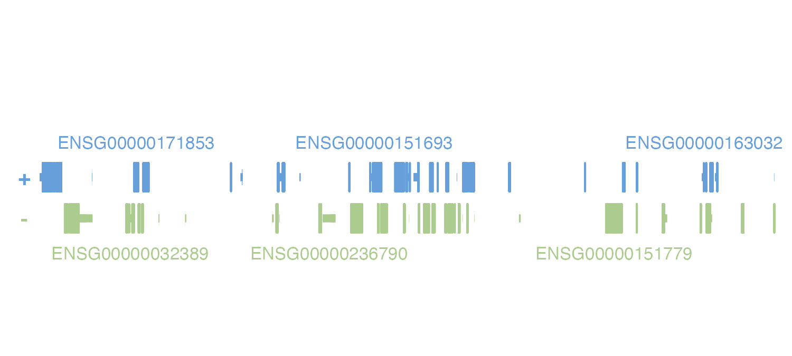

vignettes/guides/bioconductor_integration.Rmd
bioconductor_integration.Rmdplotgardener is designed to be flexibly compatible with
typical Bioconductor classes and libraries of genomic data to easily
integrate genomic data analysis and visualization. In addition to
handling various genomic file types and R objects, many
plotgardener functions can also handle GRanges
or GInteractions objects as input data. Furthermore,
plotgardener does not hard-code any genomic assemblies and
can utilize TxDb, OrgDb, and
BSgenome objects for various genomic annotations, including
gene and transcript structures and names, chromosome sizes, and
nucleotide sequences. Furthermore, all cytoband data for ideogram plots
is retrieved from the UCSC Genome Browser through
AnnotationHub. For standard genomic assemblies (i.e. hg19,
hg38, mm10), plotgardener uses a set of default packages
that can be displayed by calling defaultPackages():
defaultPackages("hg38")
#> 'data.frame': 1 obs. of 6 variables:
#> $ Genome : chr "hg38"
#> $ TxDb : chr "TxDb.Hsapiens.UCSC.hg38.knownGene"
#> $ OrgDb : chr "org.Hs.eg.db"
#> $ gene.id.column: chr "ENTREZID"
#> $ display.column: chr "SYMBOL"
#> $ BSgenome : chr "BSgenome.Hsapiens.UCSC.hg38"
defaultPackages("hg19")
#> 'data.frame': 1 obs. of 6 variables:
#> $ Genome : chr "hg19"
#> $ TxDb : chr "TxDb.Hsapiens.UCSC.hg19.knownGene"
#> $ OrgDb : chr "org.Hs.eg.db"
#> $ gene.id.column: chr "ENTREZID"
#> $ display.column: chr "SYMBOL"
#> $ BSgenome : chr "BSgenome.Hsapiens.UCSC.hg19"
defaultPackages("mm10")
#> 'data.frame': 1 obs. of 6 variables:
#> $ Genome : chr "mm10"
#> $ TxDb : chr "TxDb.Mmusculus.UCSC.mm10.knownGene"
#> $ OrgDb : chr "org.Mm.eg.db"
#> $ gene.id.column: chr "ENTREZID"
#> $ display.column: chr "SYMBOL"
#> $ BSgenome : chr "BSgenome.Mmusculus.UCSC.mm10"To see which assemblies have defaults within
plotgardener, call genomes():
genomes()
#> bosTau8
#> bosTau9
#> canFam3
#> ce6
#> ce11
#> danRer10
#> danRer11
#> dm3
#> dm6
#> galGal4
#> galGal5
#> galGal6
#> hg18
#> hg19
#> hg38
#> mm9
#> mm10
#> rheMac3
#> rheMac8
#> rheMac10
#> panTro5
#> panTro6
#> rn4
#> rn5
#> rn6
#> sacCer2
#> sacCer3
#> susScr3
#> susScr11plotgardener functions default to an “hg38” assembly,
but can be customized with any of the other genomic assemblies included
or a assembly object. To create custom genomic assemblies
and combinations of TxDb, orgDb, and
BSgenome packages for use in plotgardener
functions, we can use the assembly() constructor. For
example, we can create our own TxDb from the current human
Ensembl release:
library(GenomicFeatures)
TxDb.Hsapiens.Ensembl.GrCh38.103 <- makeTxDbFromEnsembl(
organism =
"Homo sapiens"
)We can now create a new assembly with this
TxDb and combinations of other Bioconductor packages. The
Genome parameter can is a string to name or describe this
assembly. Since the TxDb is now from ENSEMBL, we will
change the gene.id field to "ENSEMBL" to map
gene IDs and symbols between our TxDb and
orgDb objects. Most gene ID types can be found by calling
AnnotationDbi::keytypes() on an orgDb.
Ensembl38 <- assembly(
Genome = "Ensembl.GRCh38.103",
TxDb = TxDb.Hsapiens.Ensembl.GrCh38.103,
OrgDb = "org.Hs.eg.db",
BSgenome = "BSgenome.Hsapiens.NCBI.GRCh38",
gene.id = "ENSEMBL", display.column = "SYMBOL"
)This assembly object can now be easily passed into
plotgardener functions through the assembly
parameter to use custom genomic assembly configurations.
assembly objects are especially handy for changing the
type of gene or transcript label of our gene and transcript plots. The
default display.column = "SYMBOL", but we could change this
value to other available keytypes in the orgDb
we are using. For example, if we wanted to display the associated
Ensembl IDs of an “hg19” assembly object, we would set
display.column = "ENSEMBL":
library(TxDb.Hsapiens.UCSC.hg19.knownGene)
library(org.Hs.eg.db)
new_hg19 <- assembly(
Genome = "id_hg19",
TxDb = "TxDb.Hsapiens.UCSC.hg19.knownGene",
OrgDb = "org.Hs.eg.db",
gene.id.column = "ENTREZID",
display.column = "ENSEMBL"
)
pageCreate(
width = 5, height = 1.25,
showGuides = FALSE, xgrid = 0, ygrid = 0
)
genePlot <- plotGenes(
chrom = "chr2", chromstart = 1000000, chromend = 20000000,
assembly = new_hg19,
x = 0.25, y = 0.25, width = 4.75, height = 1
)
sessionInfo()
#> R version 4.2.0 (2022-04-22)
#> Platform: x86_64-apple-darwin17.0 (64-bit)
#> Running under: macOS Big Sur/Monterey 10.16
#>
#> Matrix products: default
#> BLAS: /Library/Frameworks/R.framework/Versions/4.2/Resources/lib/libRblas.0.dylib
#> LAPACK: /Library/Frameworks/R.framework/Versions/4.2/Resources/lib/libRlapack.dylib
#>
#> locale:
#> [1] en_US.UTF-8/en_US.UTF-8/en_US.UTF-8/C/en_US.UTF-8/en_US.UTF-8
#>
#> attached base packages:
#> [1] stats4 grid stats graphics grDevices utils datasets
#> [8] methods base
#>
#> other attached packages:
#> [1] org.Hs.eg.db_3.15.0
#> [2] TxDb.Hsapiens.UCSC.hg19.knownGene_3.2.2
#> [3] GenomicFeatures_1.48.1
#> [4] AnnotationDbi_1.58.0
#> [5] Biobase_2.56.0
#> [6] GenomicRanges_1.48.0
#> [7] GenomeInfoDb_1.32.2
#> [8] IRanges_2.30.0
#> [9] S4Vectors_0.34.0
#> [10] BiocGenerics_0.42.0
#> [11] plotgardener_1.2.0
#>
#> loaded via a namespace (and not attached):
#> [1] bitops_1.0-7 matrixStats_0.62.0
#> [3] fs_1.5.2 bit64_4.0.5
#> [5] filelock_1.0.2 progress_1.2.2
#> [7] httr_1.4.3 RColorBrewer_1.1-3
#> [9] rprojroot_2.0.3 tools_4.2.0
#> [11] bslib_0.3.1 utf8_1.2.2
#> [13] R6_2.5.1 DBI_1.1.2
#> [15] colorspace_2.0-3 prettyunits_1.1.1
#> [17] tidyselect_1.1.2 bit_4.0.4
#> [19] curl_4.3.2 compiler_4.2.0
#> [21] textshaping_0.3.6 cli_3.3.0
#> [23] xml2_1.3.3 desc_1.4.1
#> [25] DelayedArray_0.22.0 rtracklayer_1.56.0
#> [27] sass_0.4.1 scales_1.2.0
#> [29] rappdirs_0.3.3 pkgdown_2.0.3
#> [31] systemfonts_1.0.4 stringr_1.4.0
#> [33] digest_0.6.29 Rsamtools_2.12.0
#> [35] yulab.utils_0.0.4 rmarkdown_2.14
#> [37] XVector_0.36.0 pkgconfig_2.0.3
#> [39] htmltools_0.5.2 MatrixGenerics_1.8.0
#> [41] highr_0.9 dbplyr_2.1.1
#> [43] fastmap_1.1.0 rlang_1.0.2
#> [45] rstudioapi_0.13 RSQLite_2.2.14
#> [47] gridGraphics_0.5-1 jquerylib_0.1.4
#> [49] BiocIO_1.6.0 generics_0.1.2
#> [51] jsonlite_1.8.0 BiocParallel_1.30.2
#> [53] dplyr_1.0.9 RCurl_1.98-1.6
#> [55] magrittr_2.0.3 ggplotify_0.1.0
#> [57] GenomeInfoDbData_1.2.8 Matrix_1.4-1
#> [59] Rcpp_1.0.8.3 munsell_0.5.0
#> [61] fansi_1.0.3 lifecycle_1.0.1
#> [63] stringi_1.7.6 yaml_2.3.5
#> [65] SummarizedExperiment_1.26.1 zlibbioc_1.42.0
#> [67] BiocFileCache_2.4.0 blob_1.2.3
#> [69] parallel_4.2.0 crayon_1.5.1
#> [71] lattice_0.20-45 Biostrings_2.64.0
#> [73] hms_1.1.1 KEGGREST_1.36.0
#> [75] knitr_1.39 pillar_1.7.0
#> [77] rjson_0.2.21 biomaRt_2.52.0
#> [79] strawr_0.0.9 XML_3.99-0.9
#> [81] glue_1.6.2 evaluate_0.15
#> [83] data.table_1.14.2 png_0.1-7
#> [85] vctrs_0.4.1 gtable_0.3.0
#> [87] purrr_0.3.4 assertthat_0.2.1
#> [89] cachem_1.0.6 ggplot2_3.3.6
#> [91] xfun_0.31 restfulr_0.0.13
#> [93] ragg_1.2.2 tibble_3.1.7
#> [95] GenomicAlignments_1.32.0 plyranges_1.16.0
#> [97] memoise_2.0.1 ellipsis_0.3.2